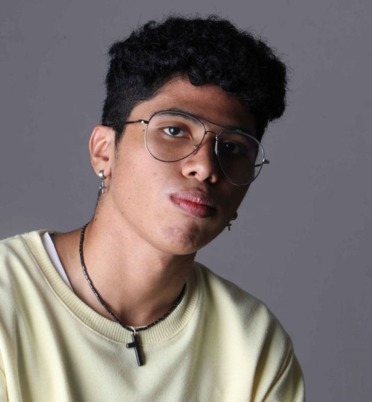
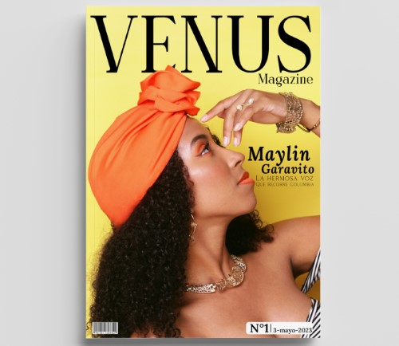

Diseño gráfico y experiencias web
Diseño que toma forma.
Diseño productos digitales accesibles y piezas gráficas con una voz clara, funcional y humana.

Proyectos con carácter propio.
Una selección de identidad, dirección de arte, diseño editorial y experiencias digitales.

Proyecto destacado
Revista de Venus
Una propuesta editorial que combina fotografía, moda y una voz tipográfica de alto contraste.
Abrir proyectoCuriosidad aplicada al diseño.
Soy estudiante de diseño y creador digital. Exploro nuevas herramientas para transformar ideas en experiencias claras, accesibles y atractivas.
- Diseño web
- Dirección de arte
- Diseño editorial
- Identidad visual
- Prototipado
- Accesibilidad